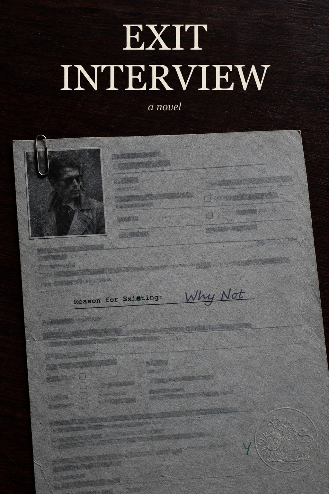

A novel
He works the last week of his two weeks' notice. His employer built the world. The form asks his reason for leaving, and he cannot write one down.

A field agent files his last reports. The job ran for a long time and paid well: build the material world, keep souls inside it, do not ask after the purpose. He never asked. Somebody else does — a voice that wants nothing from him except the one question he spent a career not raising.
So the book runs a debrief. The handover to whoever fills his gap, the paperwork, the office, the billboards, a week of ordinary corporate fakery rendered exactly as it feels — with the whole Gnostic cosmology sitting underneath it, playing the part of an org chart.
Four chapters, and the shape comes from the Sphinx: four legs, two, three, none. Birth, growth, decline, and whatever follows. Short, and self-contained.
Every exit interview asks the same question.
This one waits for an answer.
The shelf the author reaches for, named plainly rather than hinted at.
Faust, for the contract. Kafka, for the building. Siddhartha, for the walk out. The Stranger, for the flatness of a man who will not perform the feeling expected of him. They Live (1988), for the glasses. The Zhuangzi butterfly and the Finnegans Wake loop, for the ending's shape — which stays off this page.
No lecture on Gnosticism anywhere in it. The philosophy travels through the debrief, the billboards and the office furniture, and never once through exposition. A reader who knows the cosmology finds it everywhere; a reader who does not finds a novel about quitting a job.
The manuscript exists in draft, through several rounds, and the ending resolves to nothing comfortable — deliberately. Whether the last chapter stays as written remains open, and so does the question of what finally goes in the box.
No date. No pre-order. When it reaches a readable state, the list and the Discord hear first.
No list exists yet. Write to the address below and I add you to the first one.